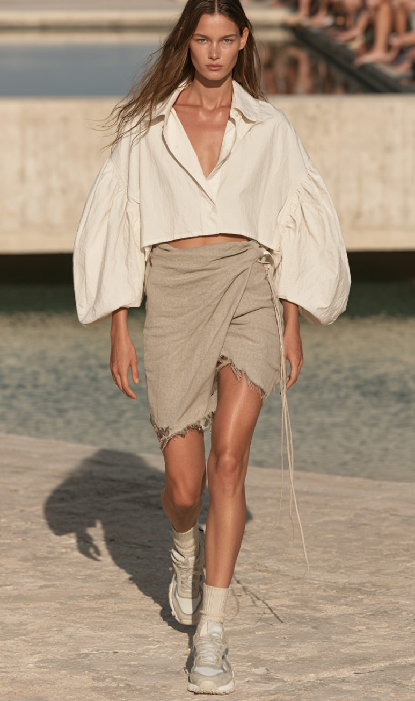
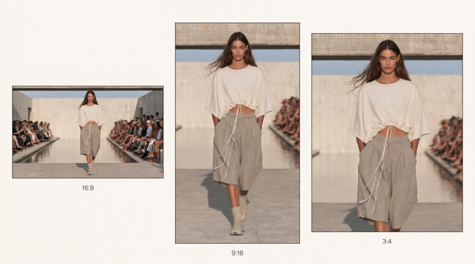
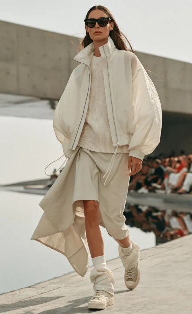
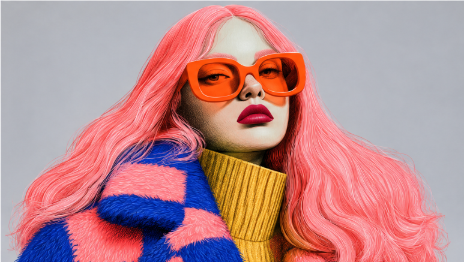
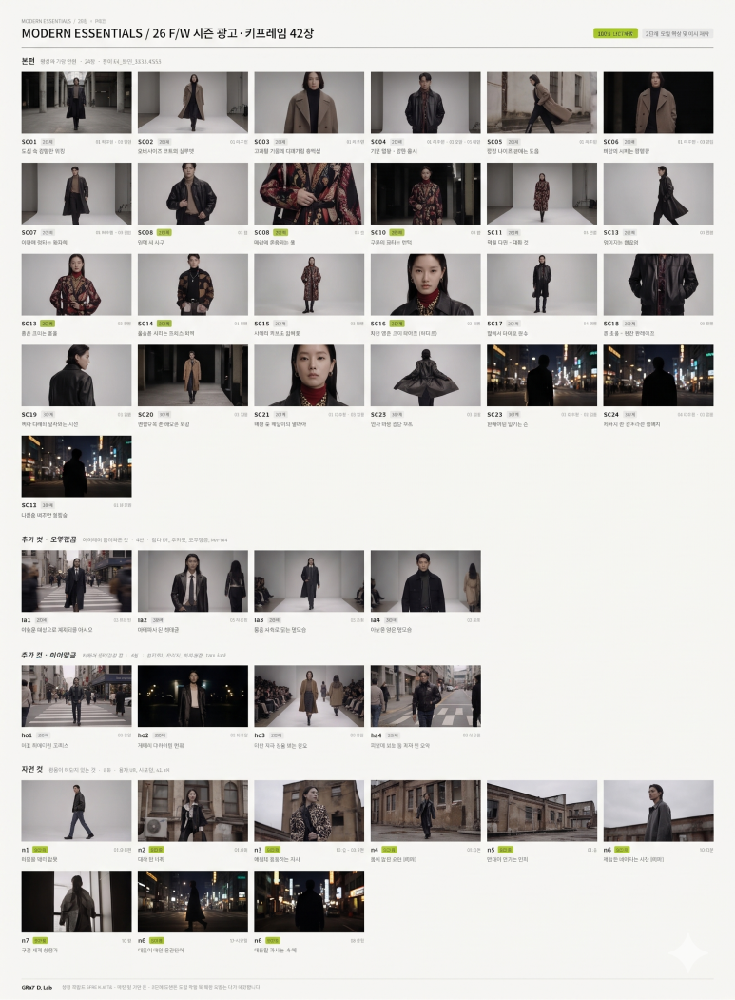
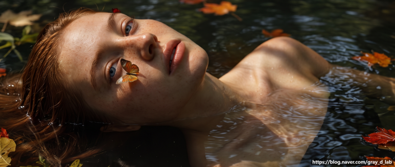

AI 영상 제작 비용, 패션 영상 견적을 결정하는 3가지
글 Kris W (감우식) ·
같은 30초짜리 AI 패션 영상도 착장과 장면 구성, 표현 수준, 기획 범위에 따라 견적이 달라집니다.

30초짜리 영상인데, 왜 견적이 이렇게 다른가요?
AI 영상 제작 견적을 여러 곳에서 받아보면 같은 길이인데도 금액 차이가 나는 경우가 많습니다. 영상 길이는 견적의 일부일 뿐이기 때문입니다.
옷으로 비유하면 이해가 쉽습니다. 같은 재킷이라도 원단, 패턴, 봉제 공정에 따라 가격이 달라집니다. 기성복과 맞춤복의 가격이 다른 것도 '길이'가 아니라 '공정'의 차이입니다.
AI 패션 영상도 같습니다. 몇 초인지보다 어떤 장면을, 어떤 수준으로, 누가 기획하느냐가 견적을 결정합니다.
GRaY D. Lab이 실제 상담에서 견적 전에 반드시 확인하는 기준 3가지를 정리했습니다.
1. 30초에 몇 착장을 담을 것인가
견적의 출발점은 레퍼런스의 씬 구성과 송출처입니다. SNS, 매장 사이니지, 웹사이트 중 어디에 쓰이느냐에 따라 필요한 화질과 화면 비율이 먼저 정해집니다.

그다음 길이와 착장 수의 균형을 봅니다. 간단히 계산해 보겠습니다.
- 30초 영상에 10착장 → 착장당 약 3초
- 30초 영상에 5착장 → 착장당 약 6초
3초는 모델이 걸음을 한두 번 옮기면 지나가는 시간입니다. 실루엣은 보여도 소재감이나 디테일까지 전달하기는 어렵습니다.
그래서 요청 길이에 비해 착장 수가 많으면, 각 착장이 제대로 보일 수 있도록 영상 길이를 늘리거나 장면 구성을 다시 제안합니다. 같은 30초라도 어떤 장면으로 채우느냐에 따라 견적이 달라지는 이유입니다.
2. 실사형인가, 일러스트형인가
패션 브랜드는 대부분 실사에 가까운 표현을 요청합니다. 원단의 질감, 옷의 핏, 모델의 자연스러운 움직임이 살아 있어야 상품이 보이기 때문입니다.


| 구분 | 실사형 | 일러스트형 |
|---|---|---|
| 주요 용도 | 브랜드 캠페인, 룩북, 매장 영상 | 콘셉트 영상, 아트워크, SNS 콘텐츠 |
| 중요한 요소 | 소재감, 핏, 움직임의 자연스러움 | 스타일의 일관성, 분위기 |
| 작업 특성 | 장면당 생성·보정 작업이 많음 | 표현 방식에 따라 작업량 차이가 큼 |
실사 수준이 높아질수록 장면 하나를 완성하는 데 들어가는 생성과 보정 작업이 늘어납니다. 그래서 원하는 완성도에 맞춰 씬 수와 장면 구성을 함께 설계합니다.
일러스트 형식은 실사 수준의 정교함이 필요하지 않아 단가가 낮아질 수 있습니다. 하지만 일러스트라는 이유만으로 비용이 낮아지지는 않습니다. 장면 수와 움직임의 복잡도에 따라 실사형보다 작업량이 많아지는 경우도 있습니다.
3. 기획은 누가 하는가
레퍼런스 링크 보내드릴게요. 이런 느낌으로 부탁드려요.
가장 많이 받는 요청이지만, 레퍼런스는 분위기를 알려줄 뿐 새 영상의 설계도는 아닙니다. 어떤 착장이 몇 번째 장면에 나오는지, 카메라는 어디서 시작하는지, 마지막 장면은 무엇인지는 따로 정해야 합니다.

- 고객이 기획을 제공하는 경우 → 기본 스토리보드를 요청드립니다.
- 새로운 캐릭터 디자인이나 스토리라인이 필요한 경우 → 기획료가 추가될 수 있습니다.
송출 목적에 맞춰 새로운 이야기를 처음부터 구성해야 한다면, 그만큼 기획 단계의 작업이 늘어나기 때문입니다.
그렇다고 레퍼런스가 반드시 있어야 하는 것은 아닙니다.
원하는 무드를 말로 설명해 주셔도 충분히 제작할 수 있습니다. 예를 들면 이런 식입니다.
- "30대 오피스 여성 타깃, 늦가을 오후 햇살, 베이지와 브라운 톤, 잔잔한 피아노 음악"
- "젠더리스 스트릿 무드, 밤의 도심, 빠른 컷 전환, 비트감 있는 일렉트로닉"
타깃, 계절감, 색감, 장소, 음악 분위기 중 몇 가지만 알려주셔도 GRaY D. Lab이 방향을 제안드립니다.
기획부터 스토리보드, 영상 제작까지 전적으로 맡기셔도 됩니다. 패션 디자이너 출신 디렉터가 상품과 브랜드를 먼저 이해한 뒤, 착장이 가장 잘 보이는 장면으로 설계합니다. 이 경우 기획 범위는 견적에 함께 포함해 안내드립니다.
문의 전 1분 체크리스트
아래 네 가지를 미리 정리해 주시면 제작 범위와 견적을 훨씬 빠르게 안내드릴 수 있습니다.
- 레퍼런스 링크 – 원하는 분위기와 톤 (없으면 원하는 무드를 말씀해 주세요)
- 희망 영상 길이 – 15초 / 30초 / 1분 등
- 착장 수 – 영상에 등장할 룩의 개수
- 송출처 – SNS / 매장 사이니지 / 웹사이트 등
아직 정하지 못한 항목이 있어도 괜찮습니다. 원하시는 무드와 송출처만 알려주셔도 적정 길이와 착장 수, 장면 구성까지 함께 제안드립니다.
자주 묻는 질문
제작 기간은 얼마나 걸리나요?
30초 이내 영상은 약 2주, 1~2분 영상은 약 3주가 소요됩니다. 확정 일정은 상담 시 함께 조율합니다.
일러스트 형식이 항상 더 저렴한가요?
그렇지 않습니다. 실사 수준의 정교함이 필요 없어 단가가 낮아질 수는 있지만, 장면 수와 움직임의 복잡도에 따라 달라집니다.
레퍼런스 링크만 있어도 견적을 받을 수 있나요?
가능합니다. 다만 희망 길이, 착장 수, 송출처를 함께 알려주시면 더 정확한 견적을 안내드릴 수 있습니다.
영상 길이를 아직 못 정했어요.
착장 수와 송출처를 기준으로 적정 길이를 제안드립니다.
견적은 금액보다 범위를 먼저 맞추는 과정입니다. 범위가 명확해야 완성도도, 일정도 지킬 수 있습니다.
GRaY D. Lab은 패션 콘텐츠의 완성도를 유지할 수 있는 범위를 기준으로 견적을 제안합니다.

글 · Kris W (감우식) | GRaY D. Lab 대표, 패션 디자이너 출신 크리에이티브 디렉터